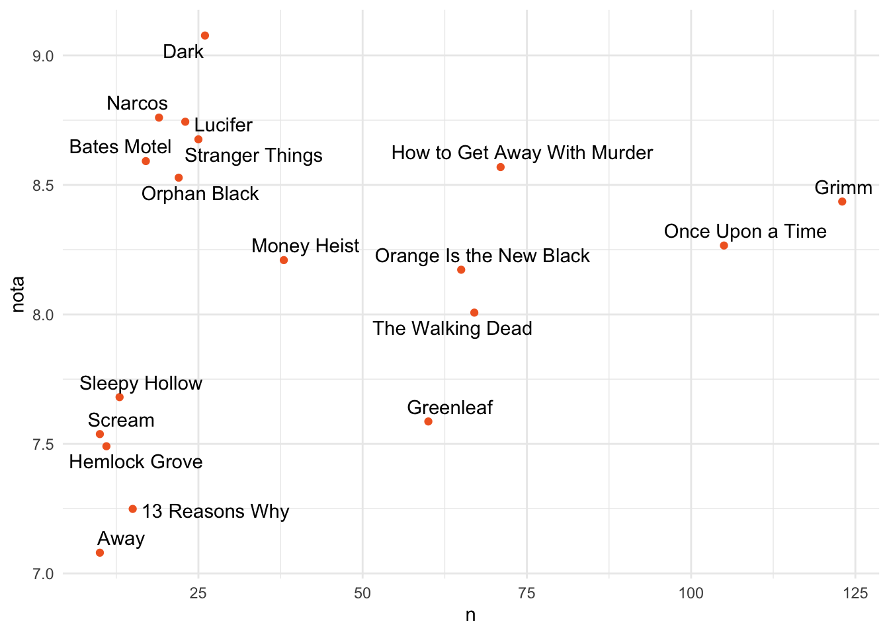
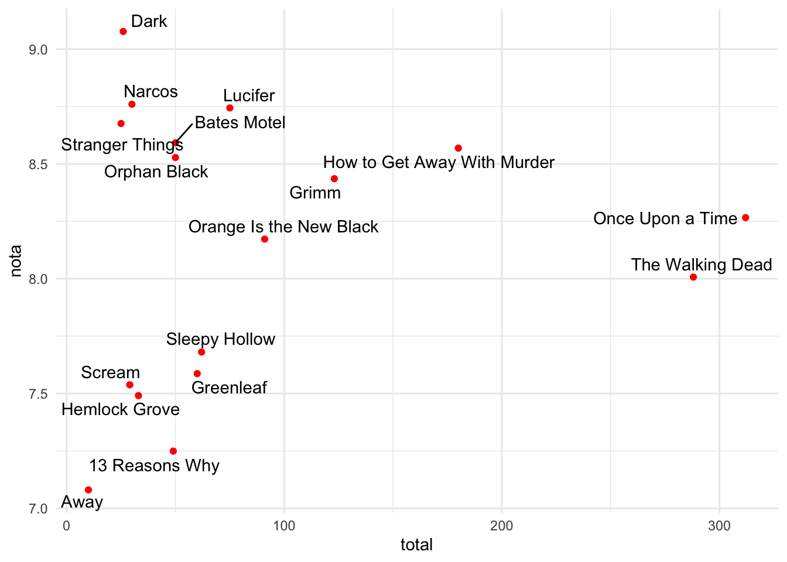

Carregando os dados
Nesta aula vamos continuar explorando os dados sobre seriados de TV,
usando dois datasets, um do Netflix (informações do viewing history) e
outro do IMDb, banco de dados com informações sobre o rating de seriados
e filmes e também
Inicialmente vamos carregar os dados. Os dados do Netflix vem do site
onde o usuário pode fazer download do seu histórico após o login (https://www.netflix.com/viewingactivity). Já os dados o
IMDb usam um script que encontra-se em: https://github.com/nazareno/imdb-series para fazer o web
scrapping do site oficial do IMDb.
Carregando os dados do IMDb, já unidos num único dataframe, a partir
do arquivo imdb_series.xlsx (o código para gerar o arquivo
excel aparece abaixo com # no início de cada linha):
library(tidyverse)
library(readxl)
#library(openxlsx)
#write.xlsx(imdb, file = "imdb_series.xlsx")
imdb_series <- read_xlsx("data1/imdb_series.xlsx")
Já mostramos como carregar os dados do Netflix no webinar anterior.
Após arrumar o tipo Date para a coluna “Date”, eliminar os
registros que não são seriados e eliminar os registros que tinha
NA na coluna “Episode”, chegamos a um dataframe limpo, que
será carregado já em formato excel, denominado
netflix_series_limpo.xlsx (o código para gerar o arquivo
excel aparece abaixo com # no início de cada linha):
#netflix_series_limpo <- netflix %>%
# filter(str_detect(Title, ":")) %>%
# separate(Title,c("series_title","season","episode"),":") %>%
# filter(!is.na(episode))
#write.xlsx(netflix_series_limpo, file = "netflix_series_limpo.xlsx")
netflix <- read.csv("data1/NetflixViewingHistory.csv")
netflix_series_limpo <- read_xlsx("data1/netflix_series_limpo.xlsx")
Também podemos ter facilmente a lista de filmes assistidos, a partir
do dataset netflix e do código apresentado anteriormente
para filtrar seriados:
netflix_filmes <- netflix %>%
separate(Title, c("movie_title","season","episode"),":") %>%
filter(is.na(episode)) %>%
select(movie_title, Date)
## Warning: Expected 3 pieces. Additional pieces discarded in 50 rows [17, 69, 70,
## 219, 313, 314, 315, 316, 317, 318, 319, 320, 389, 397, 398, 399, 400, 425, 427,
## 428, ...].
## Warning: Expected 3 pieces. Missing pieces filled with `NA` in 215 rows [11, 14,
## 22, 23, 24, 25, 26, 27, 28, 29, 30, 34, 43, 46, 47, 49, 53, 54, 63, 66, ...].
Seriados mais assistidos no Netflix e suas avaliações no imdb:
Podemos iniciar visualizando a lista dos 20 seriados mais assistidos,
com o código a seguir:
netflix_series_mais_assistidas <- netflix_series_limpo %>%
group_by(series_title) %>%
count() %>%
arrange(desc(n)) %>%
ungroup() %>%
top_n(20, wt=n)
netflix_series_mais_assistidas %>%
ggplot(aes(reorder(series_title, n), n))+
geom_col(fill="#f16727")+
coord_flip()+
theme_linedraw() +
labs(y="Capítulos assistidos",
title = "Seriados mais assistidos - Netflix")+
theme(axis.title.y = element_blank())
e agora vamos verificar a avaliação global de cada um dos seriados
acima, usando as informações do imdb. Primeiro, vamos calcular a
avaliação média para cada seriado no dataframe do imdb:
imdb_series_nota_media <- imdb_series %>%
group_by(series_name) %>%
summarize(nota=mean(UserRating))
Juntando os datasets Netflix e IMDb
Agora podemos juntar as informações de avaliação de cada seriado com
os seriados mais assistidos:
nomes <- data.frame(pt=c("Grimm: Contos de Terror", "Era Uma Vez",
"Como Defender um Assassino", "La Casa de Papel",
"Lúcifer","Motel Bates","Pânico: A Série de TV"),
en=c("Grimm","Once Upon a Time",
"How to Get Away With Murder","Money Heist",
"Lucifer","Bates Motel","Scream"))
netflix_imdb_pt_en <- netflix_series_mais_assistidas %>%
left_join(nomes, by=c("series_title"="en")) %>%
mutate(titulo_pt=ifelse(is.na(pt), series_title, pt)) %>%
left_join(imdb_series_nota_media, by=c("titulo_pt"="series_name")) %>%
select(-pt)
library(ggrepel)
netflix_imdb_pt_en %>%
ggplot(aes(n, nota, label=series_title))+
geom_point(color="#f16727") +
geom_text_repel()
## Warning: Removed 4 rows containing missing values (geom_point).
## Warning: Removed 4 rows containing missing values (geom_text_repel).

Quantidade de capítulos assistidos e de capítulos totais por
seriado
Será que foram assistidos todos os capítulos de cada seriado
acima?
assistidos_vs_total <- netflix_imdb_pt_en %>%
left_join(imdb_series, by=c("titulo_pt"="series_name")) %>%
group_by(series_title) %>%
summarize(total=n()) %>%
left_join(netflix_imdb_pt_en, by="series_title") %>%
mutate(faltam=total-n) %>%
filter(faltam >=0)
library(knitr)
assistidos_vs_total %>%
kable(digits = 2)
|
series_title
|
total
|
n
|
titulo_pt
|
nota
|
faltam
|
|
13 Reasons Why
|
49
|
15
|
13 Reasons Why
|
7.25
|
34
|
|
Away
|
10
|
10
|
Away
|
7.08
|
0
|
|
Bates Motel
|
50
|
17
|
Motel Bates
|
8.59
|
33
|
|
Dark
|
26
|
26
|
Dark
|
9.08
|
0
|
|
Greenleaf
|
60
|
60
|
Greenleaf
|
7.59
|
0
|
|
Grimm
|
123
|
123
|
Grimm: Contos de Terror
|
8.44
|
0
|
|
Hemlock Grove
|
33
|
11
|
Hemlock Grove
|
7.49
|
22
|
|
How to Get Away With Murder
|
180
|
71
|
Como Defender um Assassino
|
8.57
|
109
|
|
Lucifer
|
75
|
23
|
Lúcifer
|
8.74
|
52
|
|
Narcos
|
30
|
19
|
Narcos
|
8.76
|
11
|
|
Once Upon a Time
|
312
|
105
|
Era Uma Vez
|
8.27
|
207
|
|
Orange Is the New Black
|
91
|
65
|
Orange Is the New Black
|
8.17
|
26
|
|
Orphan Black
|
50
|
22
|
Orphan Black
|
8.53
|
28
|
|
Scream
|
29
|
10
|
Pânico: A Série de TV
|
7.54
|
19
|
|
Sleepy Hollow
|
62
|
13
|
Sleepy Hollow
|
7.68
|
49
|
|
Stranger Things
|
25
|
25
|
Stranger Things
|
8.68
|
0
|
|
The Walking Dead
|
288
|
67
|
The Walking Dead
|
8.01
|
221
|
vamos fazer um gráfico comparativo do que foi assistido e o total de
capítulos vs a avaliação do IMDb:
assistidos_vs_total %>%
ggplot(aes(total, nota, label=series_title))+
geom_point(color="red")+
geom_text_repel()

assistidos_vs_total %>%
ggplot(aes(total, n, label=series_title))+
geom_point(color="red")+
geom_text_repel()+
scale_x_continuous(trans="log2")+
scale_y_continuous(trans="log2")+
geom_abline(color="blue")

Avaliações de seriados específicos por temporada
Agora vamos ver como foram avaliados capítulos específicos de alguns
dos seriados mais assistidos, como exemplo vamos analisar o seriado com
mais capítulos assistidos (Grimm).
netflix_series_limpo %>%
filter(series_title == "Grimm") %>%
arrange(.,Date) %>%
left_join(nomes, by=c("series_title"="en")) %>%
left_join(imdb_series, by=c("pt"="series_name",
"episode"="Episode")) %>%
select(Date, season.x, episode, UserRating) %>%
ggplot(aes(season.x, UserRating))+
geom_boxplot(aes(fill=season.x))
## Warning: Removed 9 rows containing non-finite values (stat_boxplot).
Por fim, vamos mudar a camada de cores, para uma que é
tradicionalmente usada, a escala viridis, usando a função
´scale_fill_viridis_d()`:
netflix_series_limpo %>%
filter(series_title == "Grimm") %>%
arrange(.,Date) %>%
left_join(nomes, by=c("series_title"="en")) %>%
left_join(imdb_series, by=c("pt"="series_name",
"episode"="Episode")) %>%
select(Date, season.x, episode, UserRating) %>%
ggplot(aes(season.x, UserRating))+
geom_boxplot(aes(fill=season.x))+
scale_fill_viridis_d()
## Warning: Removed 9 rows containing non-finite values (stat_boxplot).
LS0tCnRpdGxlOiAiR2FiYXJpdG8gLSBXZWJpbmFyIDFiIC0gRURBIgpzdWJ0aXRsZTogIlNlZ3VuZGEgcGFydGUiCm91dHB1dDoKICAgaHRtbF9kb2N1bWVudDoKICAgIHRvYzogdHJ1ZQogICAgdG9jX2Zsb2F0OiB0cnVlCiAgICBjb2RlX2Rvd25sb2FkOiB0cnVlCiAgICB0aGVtZTogcGFwZXIKZGF0ZTogIsOabHRpbWEgdmVyc8OjbyBlbSBgciBmb3JtYXQoU3lzLnRpbWUoKSwgJyVkLyVtLyV5JylgIgotLS0KCmBgYHtyIHNldHVwLCBpbmNsdWRlPUZBTFNFfQprbml0cjo6b3B0c19jaHVuayRzZXQoZWNobyA9IFRSVUUpCmBgYAoKIyBDYXJyZWdhbmRvIG9zIGRhZG9zCgpOZXN0YSBhdWxhIHZhbW9zIGNvbnRpbnVhciBleHBsb3JhbmRvIG9zIGRhZG9zIHNvYnJlIHNlcmlhZG9zIGRlIFRWLCB1c2FuZG8gZG9pcyBkYXRhc2V0cywgdW0gZG8gTmV0ZmxpeCAoaW5mb3JtYcOnw7VlcyBkbyB2aWV3aW5nIGhpc3RvcnkpIGUgb3V0cm8gZG8gSU1EYiwgYmFuY28gZGUgZGFkb3MgY29tIGluZm9ybWHDp8O1ZXMgc29icmUgbyByYXRpbmcgZGUgc2VyaWFkb3MgZSBmaWxtZXMgZSB0YW1iw6ltIAoKSW5pY2lhbG1lbnRlIHZhbW9zIGNhcnJlZ2FyIG9zIGRhZG9zLiBPcyBkYWRvcyBkbyBOZXRmbGl4IHZlbSBkbyBzaXRlIG9uZGUgbyB1c3XDoXJpbyBwb2RlIGZhemVyIGRvd25sb2FkIGRvIHNldSBoaXN0w7NyaWNvIGFww7NzIG8gbG9naW4gKGh0dHBzOi8vd3d3Lm5ldGZsaXguY29tL3ZpZXdpbmdhY3Rpdml0eSkuIErDoSBvcyBkYWRvcyBvIElNRGIgdXNhbSB1bSBzY3JpcHQgcXVlIGVuY29udHJhLXNlIGVtOiBodHRwczovL2dpdGh1Yi5jb20vbmF6YXJlbm8vaW1kYi1zZXJpZXMgcGFyYSBmYXplciBvIHdlYiBzY3JhcHBpbmcgZG8gc2l0ZSBvZmljaWFsIGRvIElNRGIuCgpDYXJyZWdhbmRvIG9zIGRhZG9zIGRvIElNRGIsIGrDoSB1bmlkb3MgbnVtIMO6bmljbyBkYXRhZnJhbWUsIGEgcGFydGlyIGRvIGFycXVpdm8gYGltZGJfc2VyaWVzLnhsc3hgIChvIGPDs2RpZ28gcGFyYSBnZXJhciBvIGFycXVpdm8gZXhjZWwgYXBhcmVjZSBhYmFpeG8gY29tICMgbm8gaW7DrWNpbyBkZSBjYWRhIGxpbmhhKToKCmBgYHtyIGltZGJ9CgpsaWJyYXJ5KHRpZHl2ZXJzZSkKbGlicmFyeShyZWFkeGwpCgojbGlicmFyeShvcGVueGxzeCkKI3dyaXRlLnhsc3goaW1kYiwgZmlsZSA9ICJpbWRiX3Nlcmllcy54bHN4IikKCmltZGJfc2VyaWVzIDwtIHJlYWRfeGxzeCgiZGF0YTEvaW1kYl9zZXJpZXMueGxzeCIpCmBgYAoKSsOhIG1vc3RyYW1vcyBjb21vIGNhcnJlZ2FyIG9zIGRhZG9zIGRvIE5ldGZsaXggbm8gd2ViaW5hciBhbnRlcmlvci4gQXDDs3MgYXJydW1hciBvIHRpcG8gYERhdGVgIHBhcmEgYSBjb2x1bmEgIkRhdGUiLCBlbGltaW5hciBvcyByZWdpc3Ryb3MgcXVlIG7Do28gc8OjbyBzZXJpYWRvcyBlIGVsaW1pbmFyIG9zIHJlZ2lzdHJvcyBxdWUgdGluaGEgYE5BYCBuYSBjb2x1bmEgIkVwaXNvZGUiLCBjaGVnYW1vcyBhIHVtIGRhdGFmcmFtZSBsaW1wbywgcXVlIHNlcsOhIGNhcnJlZ2FkbyBqw6EgZW0gZm9ybWF0byBleGNlbCwgZGVub21pbmFkbyBgbmV0ZmxpeF9zZXJpZXNfbGltcG8ueGxzeGAgKG8gY8OzZGlnbyBwYXJhIGdlcmFyIG8gYXJxdWl2byBleGNlbCBhcGFyZWNlIGFiYWl4byBjb20gIyBubyBpbsOtY2lvIGRlIGNhZGEgbGluaGEpOgoKYGBge3J9CgojbmV0ZmxpeF9zZXJpZXNfbGltcG8gPC0gbmV0ZmxpeCAlPiUgCiMgIGZpbHRlcihzdHJfZGV0ZWN0KFRpdGxlLCAiOiIpKSAlPiUgCiMgIHNlcGFyYXRlKFRpdGxlLGMoInNlcmllc190aXRsZSIsInNlYXNvbiIsImVwaXNvZGUiKSwiOiIpICU+JSAKIyAgZmlsdGVyKCFpcy5uYShlcGlzb2RlKSkKCiN3cml0ZS54bHN4KG5ldGZsaXhfc2VyaWVzX2xpbXBvLCBmaWxlID0gIm5ldGZsaXhfc2VyaWVzX2xpbXBvLnhsc3giKQoKbmV0ZmxpeCA8LSByZWFkLmNzdigiZGF0YTEvTmV0ZmxpeFZpZXdpbmdIaXN0b3J5LmNzdiIpCgpuZXRmbGl4X3Nlcmllc19saW1wbyA8LSByZWFkX3hsc3goImRhdGExL25ldGZsaXhfc2VyaWVzX2xpbXBvLnhsc3giKQoKYGBgCgpUYW1iw6ltIHBvZGVtb3MgdGVyIGZhY2lsbWVudGUgYSBsaXN0YSBkZSBmaWxtZXMgYXNzaXN0aWRvcywgYSBwYXJ0aXIgZG8gZGF0YXNldCBgbmV0ZmxpeGAgZSBkbyBjw7NkaWdvIGFwcmVzZW50YWRvIGFudGVyaW9ybWVudGUgcGFyYSBmaWx0cmFyIHNlcmlhZG9zOgoKYGBge3J9CgpuZXRmbGl4X2ZpbG1lcyA8LSBuZXRmbGl4ICU+JSAKICBzZXBhcmF0ZShUaXRsZSwgYygibW92aWVfdGl0bGUiLCJzZWFzb24iLCJlcGlzb2RlIiksIjoiKSAlPiUgCiAgZmlsdGVyKGlzLm5hKGVwaXNvZGUpKSAlPiUgCiAgc2VsZWN0KG1vdmllX3RpdGxlLCBEYXRlKQoKYGBgCgoKCiMgU2VyaWFkb3MgbWFpcyBhc3Npc3RpZG9zIG5vIE5ldGZsaXggZSBzdWFzIGF2YWxpYcOnw7VlcyBubyBpbWRiOgoKUG9kZW1vcyBpbmljaWFyIHZpc3VhbGl6YW5kbyBhIGxpc3RhIGRvcyAyMCBzZXJpYWRvcyBtYWlzIGFzc2lzdGlkb3MsIGNvbSBvIGPDs2RpZ28gYSBzZWd1aXI6CgpgYGB7cn0KbmV0ZmxpeF9zZXJpZXNfbWFpc19hc3Npc3RpZGFzIDwtIG5ldGZsaXhfc2VyaWVzX2xpbXBvICU+JSAKICBncm91cF9ieShzZXJpZXNfdGl0bGUpICU+JSAKICBjb3VudCgpICU+JSAKICBhcnJhbmdlKGRlc2MobikpICU+JSAKICB1bmdyb3VwKCkgJT4lIAogIHRvcF9uKDIwLCB3dD1uKQoKCm5ldGZsaXhfc2VyaWVzX21haXNfYXNzaXN0aWRhcyAlPiUgCiAgZ2dwbG90KGFlcyhyZW9yZGVyKHNlcmllc190aXRsZSwgbiksIG4pKSsKICBnZW9tX2NvbChmaWxsPSIjZjE2NzI3IikrCiAgY29vcmRfZmxpcCgpKwogIHRoZW1lX2xpbmVkcmF3KCkgKwogIGxhYnMoeT0iQ2Fww610dWxvcyBhc3Npc3RpZG9zIiwKICAgICAgIHRpdGxlID0gIlNlcmlhZG9zIG1haXMgYXNzaXN0aWRvcyAtIE5ldGZsaXgiKSsKICB0aGVtZShheGlzLnRpdGxlLnkgPSBlbGVtZW50X2JsYW5rKCkpCgpgYGAKCgplIGFnb3JhIHZhbW9zIHZlcmlmaWNhciBhIGF2YWxpYcOnw6NvIGdsb2JhbCBkZSBjYWRhIHVtIGRvcyBzZXJpYWRvcyBhY2ltYSwgdXNhbmRvIGFzIGluZm9ybWHDp8O1ZXMgZG8gaW1kYi4gUHJpbWVpcm8sIHZhbW9zIGNhbGN1bGFyIGEgYXZhbGlhw6fDo28gbcOpZGlhIHBhcmEgY2FkYSBzZXJpYWRvIG5vIGRhdGFmcmFtZSBkbyBpbWRiOgoKYGBge3J9CgppbWRiX3Nlcmllc19ub3RhX21lZGlhIDwtIGltZGJfc2VyaWVzICU+JSAKICBncm91cF9ieShzZXJpZXNfbmFtZSkgJT4lIAogIHN1bW1hcml6ZShub3RhPW1lYW4oVXNlclJhdGluZykpCgpgYGAKCgojIEp1bnRhbmRvIG9zIGRhdGFzZXRzIE5ldGZsaXggZSBJTURiCgpBZ29yYSBwb2RlbW9zIGp1bnRhciBhcyBpbmZvcm1hw6fDtWVzIGRlIGF2YWxpYcOnw6NvIGRlIGNhZGEgc2VyaWFkbyBjb20gb3Mgc2VyaWFkb3MgbWFpcyBhc3Npc3RpZG9zOgoKYGBge3J9Cgpub21lcyA8LSBkYXRhLmZyYW1lKHB0PWMoIkdyaW1tOiBDb250b3MgZGUgVGVycm9yIiwgIkVyYSBVbWEgVmV6IiwKICAgICAgICAgICAgICAgICAgICAgICAgICJDb21vIERlZmVuZGVyIHVtIEFzc2Fzc2lubyIsICJMYSBDYXNhIGRlIFBhcGVsIiwKICAgICAgICAgICAgICAgICAgICAgICAgICJMw7pjaWZlciIsIk1vdGVsIEJhdGVzIiwiUMOibmljbzogQSBTw6lyaWUgZGUgVFYiKSwKICAgICAgICAgICAgICAgICAgICBlbj1jKCJHcmltbSIsIk9uY2UgVXBvbiBhIFRpbWUiLAogICAgICAgICAgICAgICAgICAgICAgICAgIkhvdyB0byBHZXQgQXdheSBXaXRoIE11cmRlciIsIk1vbmV5IEhlaXN0IiwKICAgICAgICAgICAgICAgICAgICAgICAgICJMdWNpZmVyIiwiQmF0ZXMgTW90ZWwiLCJTY3JlYW0iKSkKCm5ldGZsaXhfaW1kYl9wdF9lbiA8LSBuZXRmbGl4X3Nlcmllc19tYWlzX2Fzc2lzdGlkYXMgJT4lIAogIGxlZnRfam9pbihub21lcywgYnk9Yygic2VyaWVzX3RpdGxlIj0iZW4iKSkgJT4lIAogIG11dGF0ZSh0aXR1bG9fcHQ9aWZlbHNlKGlzLm5hKHB0KSwgc2VyaWVzX3RpdGxlLCBwdCkpICU+JSAKICBsZWZ0X2pvaW4oaW1kYl9zZXJpZXNfbm90YV9tZWRpYSwgYnk9YygidGl0dWxvX3B0Ij0ic2VyaWVzX25hbWUiKSkgJT4lIAogIHNlbGVjdCgtcHQpCgpsaWJyYXJ5KGdncmVwZWwpCgoKbmV0ZmxpeF9pbWRiX3B0X2VuICU+JSAKICBnZ3Bsb3QoYWVzKG4sIG5vdGEsIGxhYmVsPXNlcmllc190aXRsZSkpKwogIGdlb21fcG9pbnQoY29sb3I9IiNmMTY3MjciKSArCiAgZ2VvbV90ZXh0X3JlcGVsKCkKCmBgYAoKCiMgUXVhbnRpZGFkZSBkZSBjYXDDrXR1bG9zIGFzc2lzdGlkb3MgZSBkZSBjYXDDrXR1bG9zIHRvdGFpcyBwb3Igc2VyaWFkbwoKU2Vyw6EgcXVlIGZvcmFtIGFzc2lzdGlkb3MgdG9kb3Mgb3MgY2Fww610dWxvcyBkZSBjYWRhIHNlcmlhZG8gYWNpbWE/CgpgYGB7cn0KCmFzc2lzdGlkb3NfdnNfdG90YWwgPC0gbmV0ZmxpeF9pbWRiX3B0X2VuICU+JSAKICBsZWZ0X2pvaW4oaW1kYl9zZXJpZXMsIGJ5PWMoInRpdHVsb19wdCI9InNlcmllc19uYW1lIikpICU+JSAKICBncm91cF9ieShzZXJpZXNfdGl0bGUpICU+JSAKICBzdW1tYXJpemUodG90YWw9bigpKSAlPiUgCiAgbGVmdF9qb2luKG5ldGZsaXhfaW1kYl9wdF9lbiwgYnk9InNlcmllc190aXRsZSIpICU+JSAKICBtdXRhdGUoZmFsdGFtPXRvdGFsLW4pICU+JSAKICBmaWx0ZXIoZmFsdGFtID49MCkKCmxpYnJhcnkoa25pdHIpCgphc3Npc3RpZG9zX3ZzX3RvdGFsICU+JSAKICBrYWJsZShkaWdpdHMgPSAyKQoKYGBgCgoKdmFtb3MgZmF6ZXIgdW0gZ3LDoWZpY28gY29tcGFyYXRpdm8gZG8gcXVlIGZvaSBhc3Npc3RpZG8gZSBvIHRvdGFsIGRlIGNhcMOtdHVsb3MgdnMgYSBhdmFsaWHDp8OjbyBkbyBJTURiOgoKYGBge3J9CmFzc2lzdGlkb3NfdnNfdG90YWwgJT4lIAogIGdncGxvdChhZXModG90YWwsIG5vdGEsIGxhYmVsPXNlcmllc190aXRsZSkpKwogIGdlb21fcG9pbnQoY29sb3I9InJlZCIpKwogIGdlb21fdGV4dF9yZXBlbCgpCgoKYXNzaXN0aWRvc192c190b3RhbCAlPiUgCiAgZ2dwbG90KGFlcyh0b3RhbCwgbiwgbGFiZWw9c2VyaWVzX3RpdGxlKSkrCiAgZ2VvbV9wb2ludChjb2xvcj0icmVkIikrCiAgZ2VvbV90ZXh0X3JlcGVsKCkrCiAgc2NhbGVfeF9jb250aW51b3VzKHRyYW5zPSJsb2cyIikrCiAgc2NhbGVfeV9jb250aW51b3VzKHRyYW5zPSJsb2cyIikrCiAgZ2VvbV9hYmxpbmUoY29sb3I9ImJsdWUiKQoKYGBgCgoKCiMgQXZhbGlhw6fDtWVzIGRlIHNlcmlhZG9zIGVzcGVjw61maWNvcyBwb3IgdGVtcG9yYWRhCgpBZ29yYSB2YW1vcyB2ZXIgY29tbyBmb3JhbSBhdmFsaWFkb3MgY2Fww610dWxvcyBlc3BlY8OtZmljb3MgZGUgYWxndW5zIGRvcyBzZXJpYWRvcyBtYWlzIGFzc2lzdGlkb3MsIGNvbW8gZXhlbXBsbyB2YW1vcyBhbmFsaXNhciBvIHNlcmlhZG8gY29tIG1haXMgY2Fww610dWxvcyBhc3Npc3RpZG9zIChHcmltbSkuCgpgYGB7cn0KCm5ldGZsaXhfc2VyaWVzX2xpbXBvICU+JSAKICBmaWx0ZXIoc2VyaWVzX3RpdGxlID09ICJHcmltbSIpICU+JSAKICBhcnJhbmdlKC4sRGF0ZSkgJT4lIAogIGxlZnRfam9pbihub21lcywgYnk9Yygic2VyaWVzX3RpdGxlIj0iZW4iKSkgJT4lIAogIGxlZnRfam9pbihpbWRiX3NlcmllcywgYnk9YygicHQiPSJzZXJpZXNfbmFtZSIsCiAgICAgICAgICAgICAgICAgICAgICAgICAgICAgICJlcGlzb2RlIj0iRXBpc29kZSIpKSAlPiUgCiAgc2VsZWN0KERhdGUsIHNlYXNvbi54LCBlcGlzb2RlLCBVc2VyUmF0aW5nKSAlPiUgCiAgZ2dwbG90KGFlcyhzZWFzb24ueCwgVXNlclJhdGluZykpKwogIGdlb21fYm94cGxvdChhZXMoZmlsbD1zZWFzb24ueCkpCgpgYGAKClBvciBmaW0sIHZhbW9zIG11ZGFyIGEgY2FtYWRhIGRlIGNvcmVzLCBwYXJhIHVtYSBxdWUgw6kgdHJhZGljaW9uYWxtZW50ZSB1c2FkYSwgYSBlc2NhbGEgdmlyaWRpcywgdXNhbmRvIGEgZnVuw6fDo28gwrRzY2FsZV9maWxsX3ZpcmlkaXNfZCgpYDoKCmBgYHtyfQpuZXRmbGl4X3Nlcmllc19saW1wbyAlPiUgCiAgZmlsdGVyKHNlcmllc190aXRsZSA9PSAiR3JpbW0iKSAlPiUgCiAgYXJyYW5nZSguLERhdGUpICU+JSAKICBsZWZ0X2pvaW4obm9tZXMsIGJ5PWMoInNlcmllc190aXRsZSI9ImVuIikpICU+JSAKICBsZWZ0X2pvaW4oaW1kYl9zZXJpZXMsIGJ5PWMoInB0Ij0ic2VyaWVzX25hbWUiLAogICAgICAgICAgICAgICAgICAgICAgICAgICAgICAiZXBpc29kZSI9IkVwaXNvZGUiKSkgJT4lIAogIHNlbGVjdChEYXRlLCBzZWFzb24ueCwgZXBpc29kZSwgVXNlclJhdGluZykgJT4lIAogIGdncGxvdChhZXMoc2Vhc29uLngsIFVzZXJSYXRpbmcpKSsKICBnZW9tX2JveHBsb3QoYWVzKGZpbGw9c2Vhc29uLngpKSsKICBzY2FsZV9maWxsX3ZpcmlkaXNfZCgpCmBgYAoKCg==